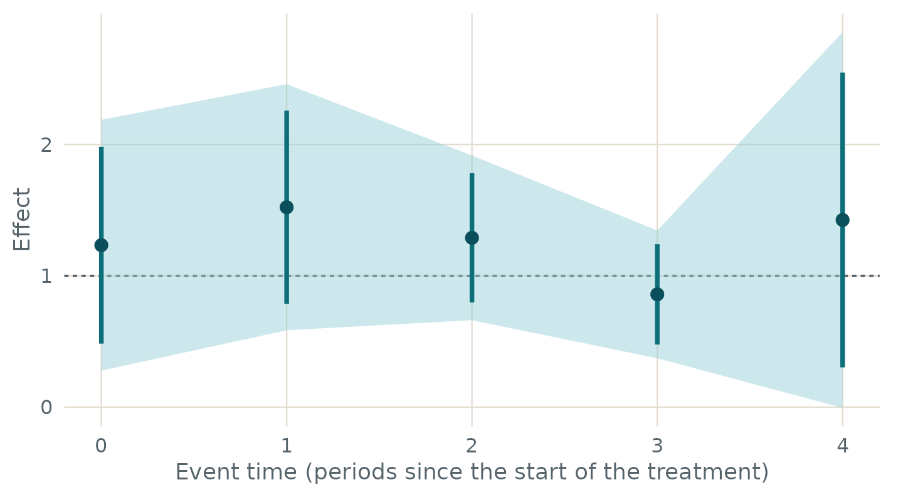

Key points
-
trop_effects()gives the mean effect of a group of treated cells. A group can be all cells with the same event time. The event time is the number of periods since the treatment started. - The band of
trop_effects()covers all groups together. An interval covers one group only. - The argument
targetkeeps some treated cells out of the estimate. Use it when the treatment is not complete in those cells. - Use
trop_boot_rows()to draw the same units for all tests. Usetrop_stepdown()to adjust the p-values. - This article uses practice data. The data have a known effect.
A practice panel
The panel has 40 units and 20 periods. Twelve units get the treatment. The treated units do not all start treatment in the same period. This is a staggered design. The true effect is 1 in each treated cell.
library(fasttrop)
panel <- trop_simulate(n_units = 40, n_periods = 20, n_treated = 12, n_post = 6,
design = "staggered", seed = 1)
head(panel)
#> unit time y d y0
#> 1 1 1 -6.1527503 0 -6.1527503
#> 2 2 1 0.7192570 0 0.7192570
#> 3 3 1 -2.4826655 0 -2.4826655
#> 4 4 1 0.8258706 0 0.8258706
#> 5 5 1 1.6852900 0 1.6852900
#> 6 6 1 -0.5593446 0 -0.5593446The paper proves the triple robustness property only for a block
design. Thus, trop() gives a warning message for a
staggered design. This article hides that message. Read the article What TROP can and cannot do before you use a
staggered design.
To keep the build fast, the fit uses fixed tuning parameters. The bootstrap has 100 draws. A real analysis must use more draws.
lambda <- c(time = 0.2, unit = 0.5, nn = 0.5)
fit <- trop(panel, outcome = "y", treatment = "d", unit = "unit", time = "time",
lambda = lambda, n_boot = 100, seed = 1)
fit
#> Triply Robust Panel (TROP) estimate
#> Method: local | Design: staggered | Units: 40 | Periods: 20 | Treated cells: 37
#> ATT: 1.266 (SE 0.1971, 95% CI 0.8799 to 1.653)
#> lambda: time = 0.2, unit = 0.5, nn = 0.5The effect for each event time
The function trop_effects() starts from a fit. The
argument by selects the groups. The choices are
"event_time", "cohort", "time",
"unit", and "overall". You can also give a
matrix with one group number for each cell.
ev <- trop_effects(fit, by = "event_time")
ev
#> TROP effects by event time
#> event_time estimate n_cells std.error conf.low conf.high band.low band.high
#> 0 1.2331 12 0.3824 0.4836 1.983 0.27808 2.188
#> 1 1.5221 8 0.3752 0.7867 2.258 0.58494 2.459
#> 2 1.2890 7 0.2511 0.7970 1.781 0.66200 1.916
#> 3 0.8586 6 0.1949 0.4767 1.241 0.37194 1.345
#> 4 1.4251 4 0.5728 0.3024 2.548 -0.00547 2.856
#> Bootstrap: 100 draws. The band is simultaneous (sup-t) at the 95% level.The estimate of a group is the mean of the effects of its cells. The
column n_cells gives the number of cells. The function uses
the bootstrap draws of the fit. Thus, the draws of all groups come from
the same resamples of units. This is necessary for the band.
Compare n_cells across the rows. Units that start
treatment late can contribute to the first event time but not the
last.

The effect for each event time of the practice panel. The points are the estimates, the thick bars are the 95% intervals for one event time, and the light band covers all event times together. The dashed line is the true effect of 1.
Use the band to read the pattern of effects over time. If the band excludes 0 at every event time, then you have evidence for an effect at every event time. An interval for one event time gives no such evidence. If you compare many intervals, one of them can exclude 0 by chance.
The band is a sup-t band. Its critical value is a quantile of the
largest absolute standardized draw over the groups. With few draws, this
quantile can change substantially with the seed. With one group, the
band columns are NA.
Keep cells out of the estimate
Sometimes the treatment is not complete in some treated cells. For
example, a rollout can start in a period but reach all units only some
periods later. The argument target keeps such cells out of
the estimate.
Give target as a column of the data with the values
TRUE and FALSE. A treated cell with
FALSE stays in the panel, but the fit does not use its
outcome. Untreated cells can still supply data for the fit. In the next
fit, the cells in the last 2 periods are outside of the target.
panel$in_target <- panel$time <= 18
fit_t <- trop(panel, outcome = "y", treatment = "d", unit = "unit", time = "time",
lambda = lambda, target = "in_target", se = "none")
c(all_cells = coef(fit), target_only = coef(fit_t))
#> all_cells.ATT target_only.ATT
#> 1.2662039 0.8723111
c(treated_cells = fit_t$n_treated_cells, outside_target = fit_t$n_excluded_cells)
#> treated_cells outside_target
#> 17 20The two estimates can be different. The second estimate does not use
the treated outcomes in the last 2 periods. The result
n_excluded_cells counts the treated cells that are not in
the estimate. The printed fit shows the same number.
Choose the target before you examine the outcomes. Record which treated cells it includes and why they answer your question.
Adjust the p-values of many tests
A test for one event time is not enough when you test many event
times or many outcomes. With many tests, one of them can be significant
by chance. trop_stepdown() uses the method of Romano and
Wolf (2005). It controls the probability of one or more false
rejections.
The method must have the joint bootstrap distribution of all
estimates. Thus, all estimates must use the same resampled units. To do
this, make the rows once with trop_boot_rows(). Use the
same units in the same order for each fit. Then give the rows to each
fit.
The example has two outcomes. The first outcome is y.
Its true effect is 1. The second outcome is y0, the outcome
without the treatment. Its true effect is 0.
W <- tapply(panel$d, list(panel$unit, panel$time), sum)
rows <- trop_boot_rows(W, n_boot = 100, seed = 2)
fit_y <- trop(panel, "y", "d", "unit", "time", lambda = lambda, boot_rows = rows)
fit_0 <- trop(panel, "y0", "d", "unit", "time", lambda = lambda, boot_rows = rows)
res <- trop_stepdown(list(effect = fit_y, no_effect = fit_0))
res
#> name estimate std.error t p_raw p_adj
#> 1 effect 1.2662039 0.2642579 4.791547 0.00990099 0.00990099
#> 2 no_effect 0.2662039 0.2642579 1.007364 0.27722772 0.27722772The column p_raw is the p-value of one test. The column
p_adj is the adjusted p-value. An adjusted p-value is never
smaller than the raw p-value. You can also give
trop_effects() objects, for example to test each event
time. The objects must have the same bootstrap rows. If they do not, the
function gives an error.
ev_0 <- trop_effects(fit_0, by = "event_time")
trop_stepdown(ev_0)
#> name estimate std.error t p_raw p_adj
#> 1 0 0.2331260 0.4445835 0.5243695 0.6060606 0.8888889
#> 2 1 0.5221123 0.3670260 1.4225484 0.1818182 0.4545455
#> 3 2 0.2890341 0.3153513 0.9165463 0.2424242 0.7373737
#> 4 3 -0.1413875 0.2302258 -0.6141254 0.4343434 0.8888889
#> 5 4 0.4250548 0.6535067 0.6504215 0.4949495 0.8888889With strata, trop_boot_rows() resamples the
units inside groups that you define, for example the waves of a rollout.
Each draw keeps the number of treated units and the number of untreated
units in each group. The argument resample = "controls"
keeps the treated units fixed and resamples only the untreated
units.
Record the version
Keep fit$package and fit$lambda with your
results. For a fit that uses cross-validation, see Choose a tuning grid.
fit$package
#> $version
#> [1] "0.3.0"
#>
#> $sha
#> [1] NALimits
- As in
trop(), the bootstrap keeps the tuning parameters fixed. It does not include the variation that comes from the selection of the tuning parameters. -
trop_effects()runs the draws one after another in R. With many draws and many cells, it can be slower than the bootstrap oftrop(). - The sup-t band and the stepdown p-values are accurate only with many draws. Use at least several hundred.
-
trop_effects()is for the local method. The global method has no effects for each cell. -
targetis for the local method.